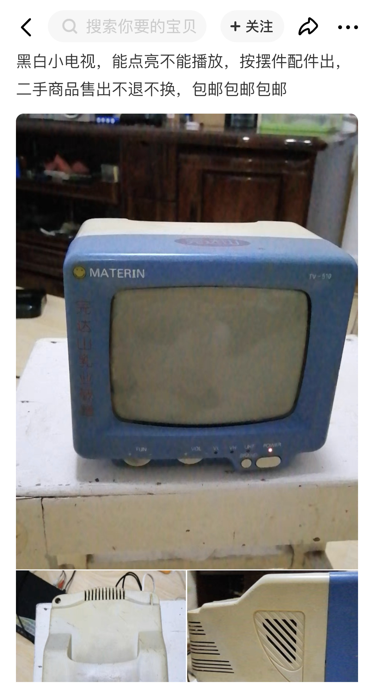
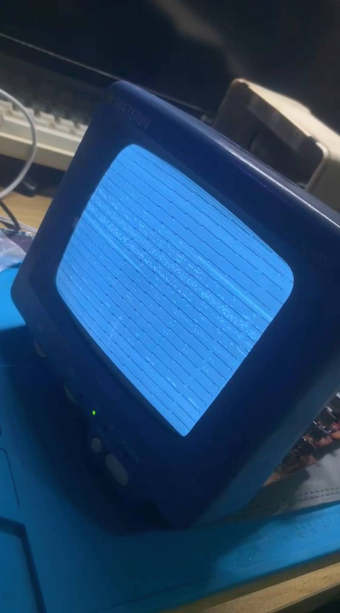
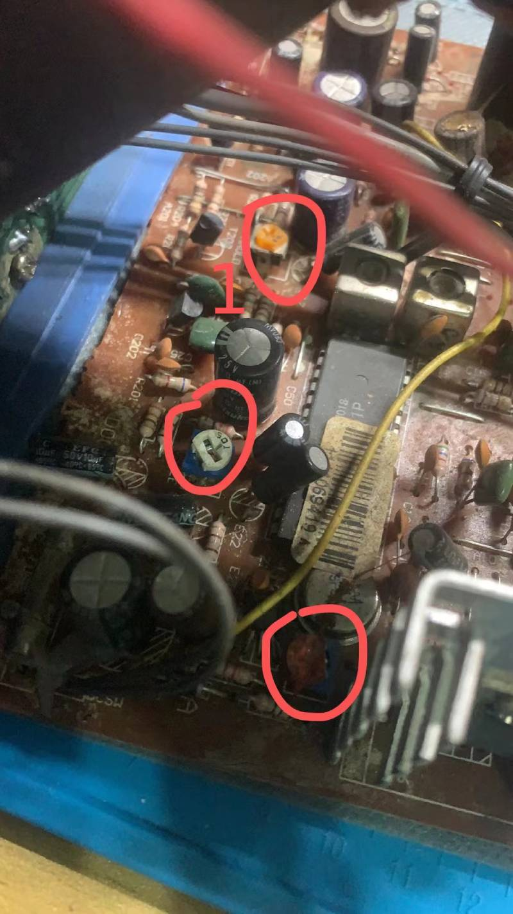
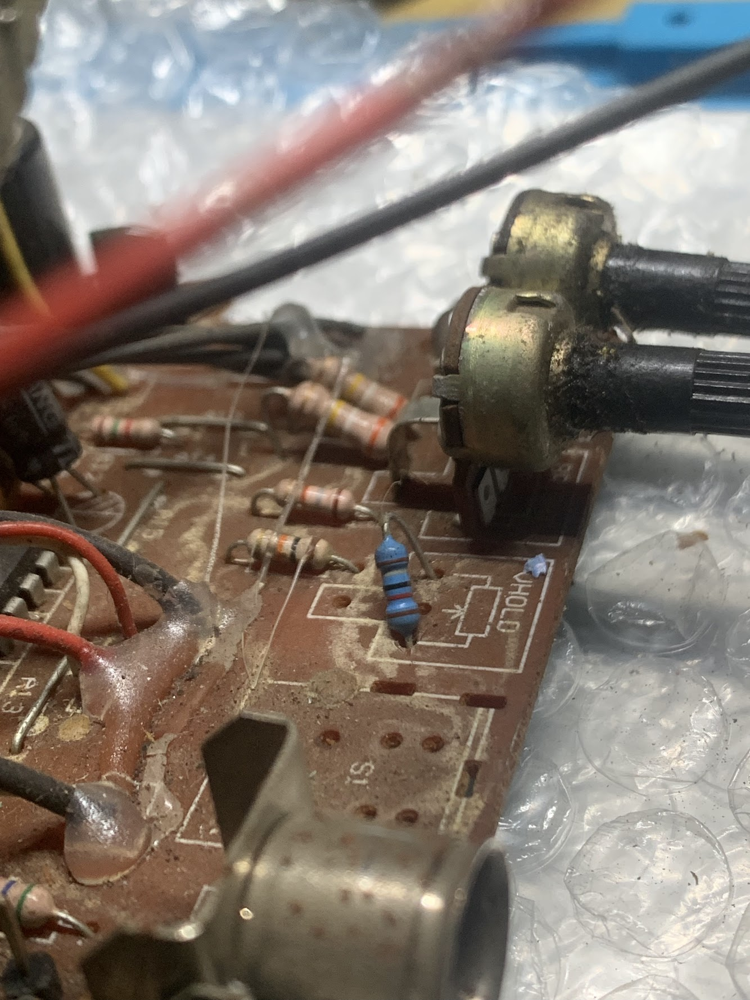
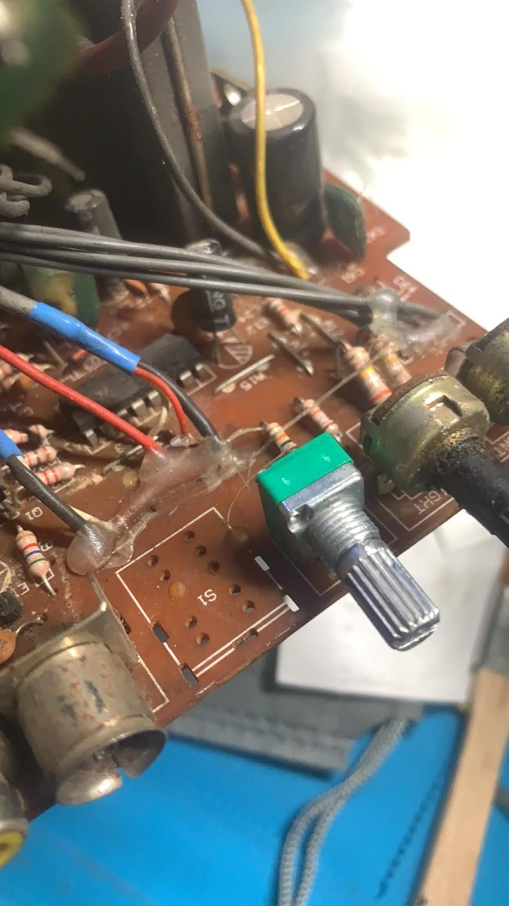
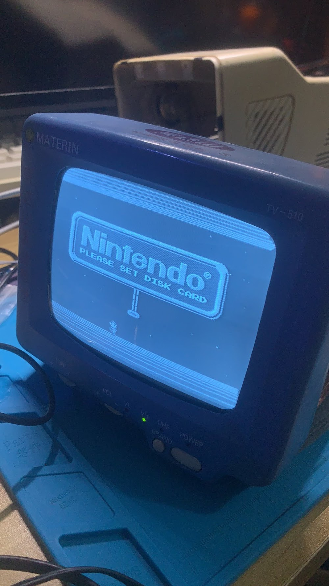

CRT黑白小电视维修记
闲逛闲鱼的时候发现这台黑白小电视，想起以前上学时也玩过一台一样大小的黑白小电视，加上价格不贵35包邮，于是收回来怀旧一下。

如宝贝描述所说，能点亮不能播放，是一台有小故障的小电视：
- 模拟信号雪花画面正常；
- AV频道无信号时画面也正常；
- AV频道有信号时场扫描不正常，行场不同步。

另外无意发现一个现象，在有信号时重新开机画面可恢复正常。
原理
简单说行和场是扫描的两个方向，行是水平偏转扫描，场是垂直偏转扫描，帧扫描是指一幅画面的扫描。帧扫描就是在行场扫描信号作用下，完成正程的扫描。一个扫描周期的正程部分，利用人眼的视觉暂留效应，我们就看到一幅完整的电视画面。
解决思路
- 首先用可调电源测试整机的开机电流为0.7A，推断出没有短路的地方；
- 然后观察电容有没有鼓包现象；
- 既然是场扫描的问题，有可能是行场电位器接触不良。
可以在高压包附近找到这个电位器，如下图红色圆圈1的橙色电位器，用螺丝刀调整一下即可解决。

调整后行场扫描已同步，但出现画面跳动的情况，这时需要调整机身背后的 V.Hold 电位器，碰巧这台机器少了这个电位器，被使用了一颗17k的电阻替代了。

现在已经很难购买到规格一样的老式电位器，脚间距是3.0mm，尝试了两次购买到下面这种20K的电位器安装上，只能勉强接上2个脚，第三个脚折起来不用。

调整之后，这台小电视的画面终于修复正常。

总结
如果显像管还能正常，能够显示完整的画面，说明未完全老化，画面扫描不正常可以通过相应的电位器调整。
comments powered by Disqus